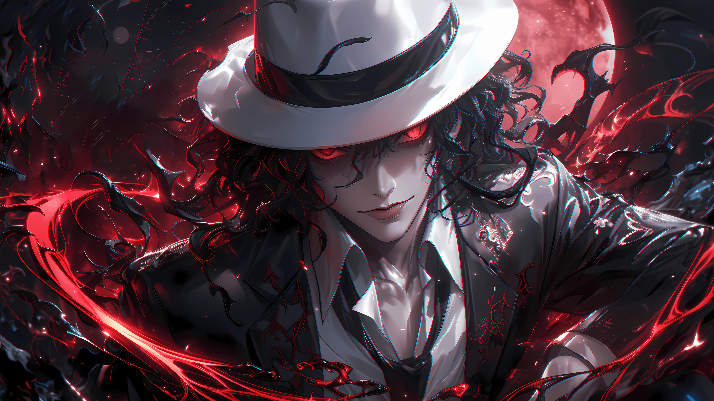
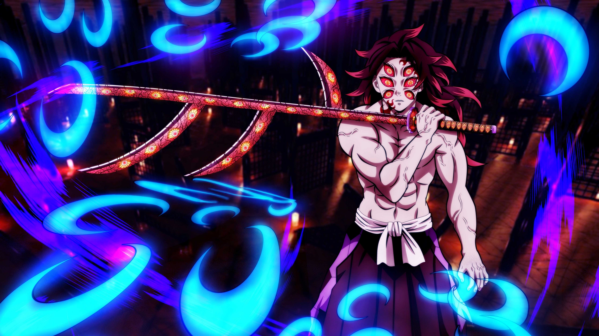

Demon Slayer pt final
foca no confronto final entre os caçadores de demônios e o vilão Muzan Kibutsuji.
Após serem
transportados para uma dimensão alternativa por Muzan...

Castelo parte 1
Os Pilares agora enfrentam Muzan e decidem atacá-lo juntos.
No entanto, eles são transportados para
a Fortaleza Infinita antes que possam desferir um único golpe e, portanto, são separados.

Parte dois
Mais demonios e tristeza, veio não acredito. Traga vela preta e o caixão.